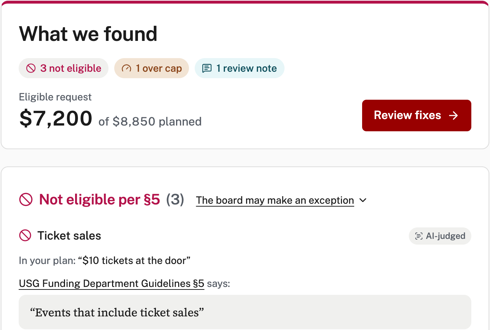
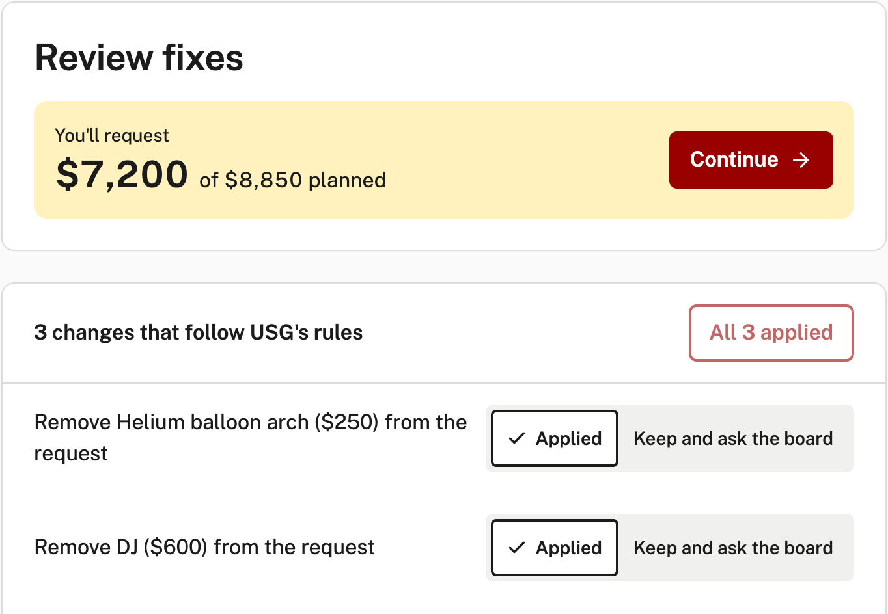
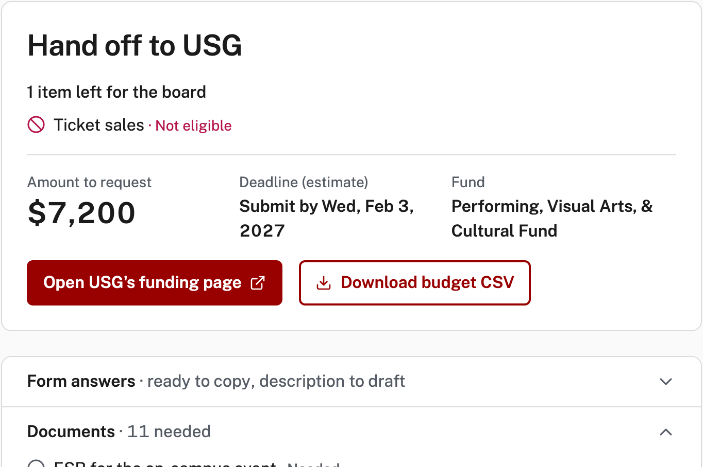
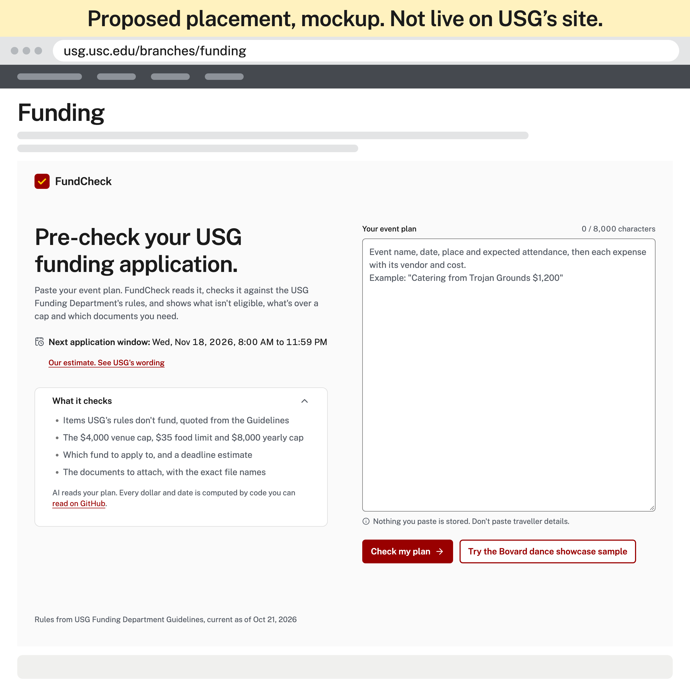

“Events that include ticket sales”
“On-campus events that are not open to all students”
So USG-funded on-campus events are free and open to every Trojan. An application that misses the deadline or comes back incomplete is one fewer free event.
$356,100
a year the USG Funding Department can allocate to undergraduate students and RSOs
Source: USG Funding Department page
The timing is this week. For an event between Jan 13 and Feb 23, 2027, two application Wednesdays are left: Nov 18 and Dec 2 (our estimate).
They clear about 2,000 words of Guidelines before applying:
“Funding Directors handle hundreds of applications every year”
An incomplete application costs their time too, and a missed one costs every Trojan a free event.
“If this deadline is not met the application will be automatically denied.”

Every flag with USG’s own quote. An $8,850 plan becomes a $7,200 request.

FundCheck proposes the fixes. Nothing changes until the officer approves each one.

Amount, deadline, fund, drafted form answers, documents and a budget CSV.
Fix and hand off: the officer approves the fixes, then takes a finished packet to USG’s funding page. Filing stays on EngageSC with their own USC sign-in. One web page, no login, nothing stored.
Plain words, pasted by an officer. Treated as untrusted data.
Line items and event facts. Matches items to rule IDs from a fixed list, picks the fund, drafts the form answers. A backup system takes over if the first fails.
Drops any rule ID not on the list. Low-confidence matches become questions, not flags.
Every dollar, every date, the document checklist and the vendor check.
Every flag shows USG’s quote from a versioned rules table. Fixes apply only when the officer approves.
98 of 100
hand-written test plans checked correctly
Each test plan was labelled with the rules it must and must not trigger before the run. They are hand-written, not real applications, so the score is a check, not a benchmark. Every case is in the public repo.
FundCheck stores nothing: the plan goes to the model for one call, and the server logs token counts, never the text.

The live tool, embedded in a stand-in page. Proposed, not live on USG’s site.
Try it: fundcheck.cyberprivacy.workers.dev/embed-demo
The whole embed is one line:
<iframe src="https://fundcheck.cyberprivacy.workers.dev" title="FundCheck pre-check" allow="clipboard-write" style="width:100%;height:900px;border:0"></iframe>
This is a proposal. Nothing is on USG’s site. One page edit would turn it on, and one would undo it.
$8,850
requested as planned, with a balloon arch, a DJ, and venue and personnel over the $4,000 cap
$7,200
requested after three fixes the officer approved
With a USG integration, the finished packet goes straight into the application form.
Funding Directors run the same check on the applications they receive, with each flag and its USG quote.
Vendor quotes are read straight into line items, so officers don’t retype them.
Our ask: let the USG Funding Department pilot FundCheck in spring 2027 office hours with the RSO liaisons.
fundcheck.cyberprivacy.workers.dev
github.com/DY0810/fundcheck